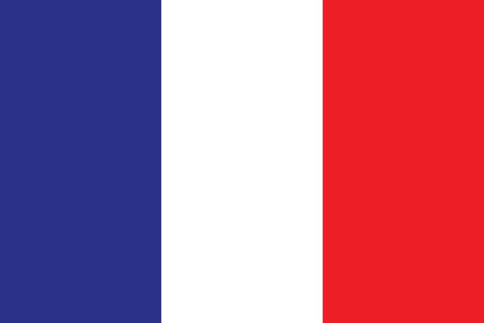
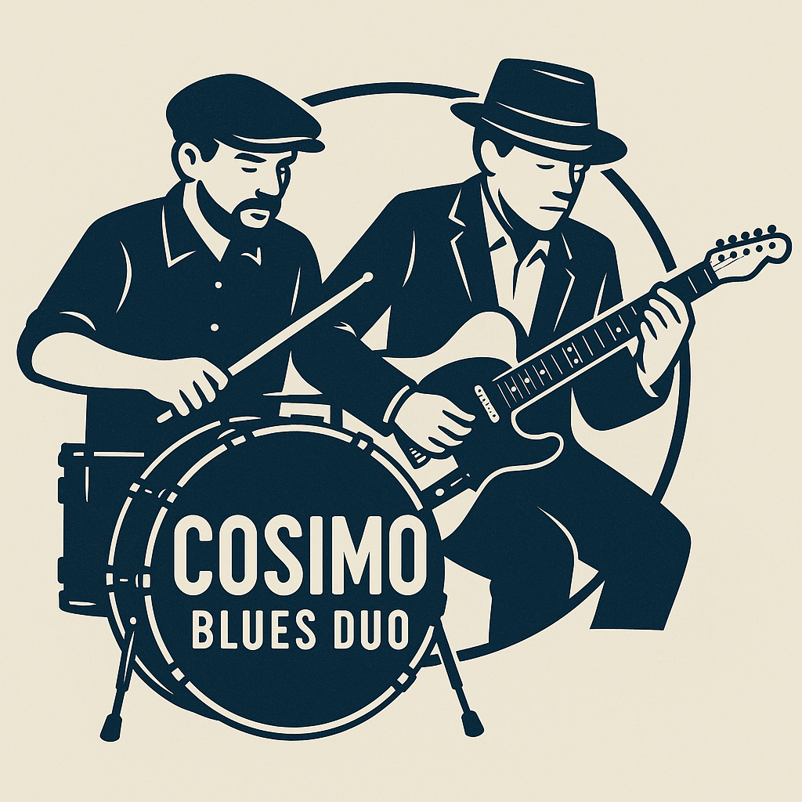
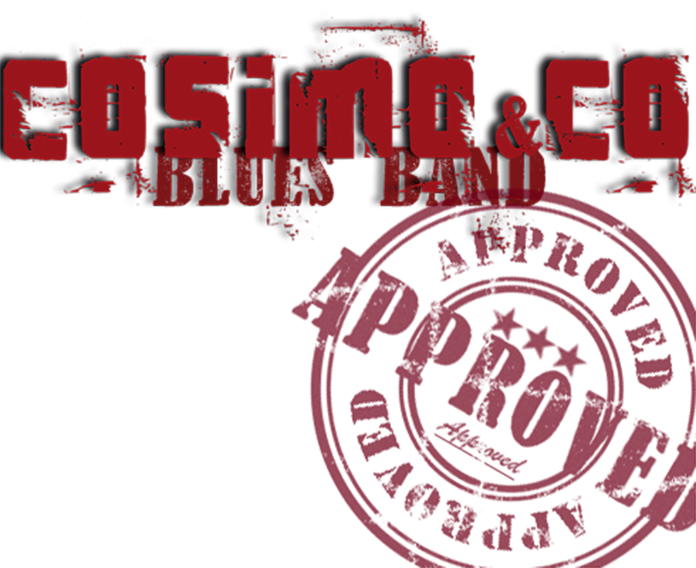
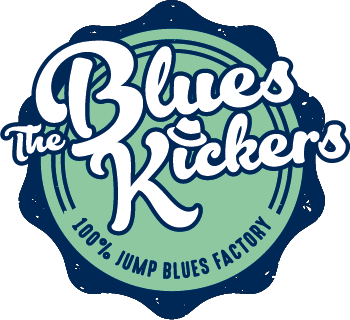
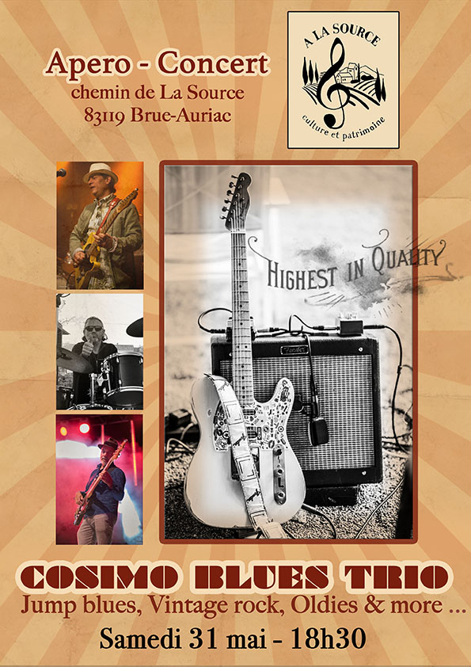
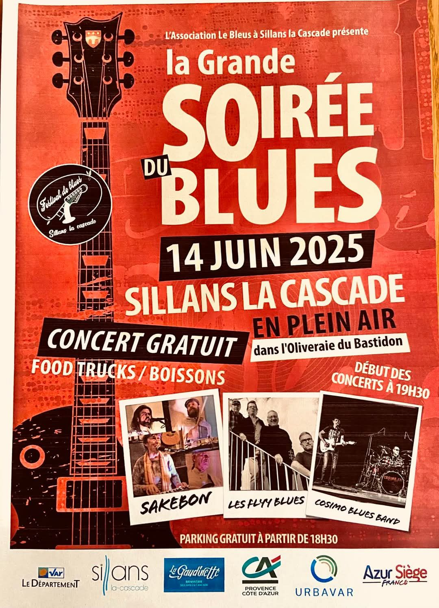
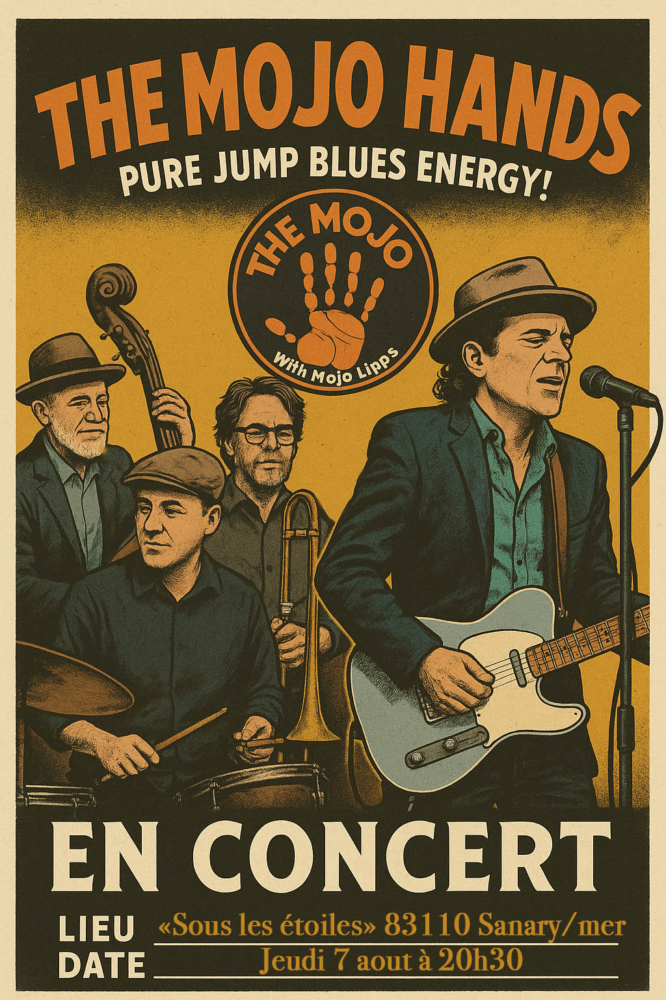
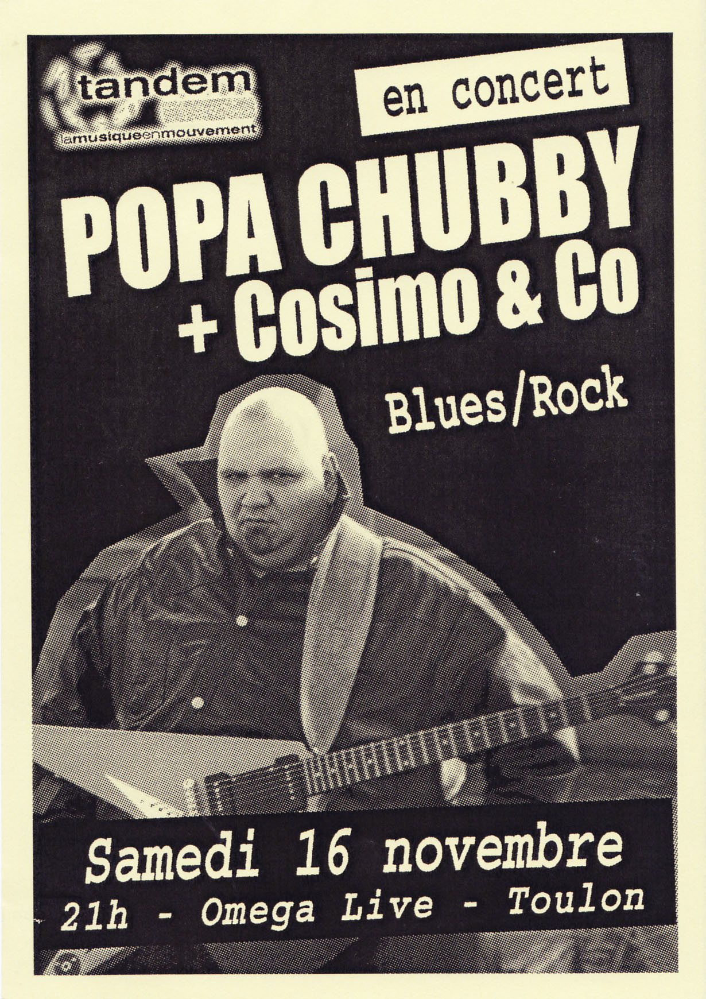
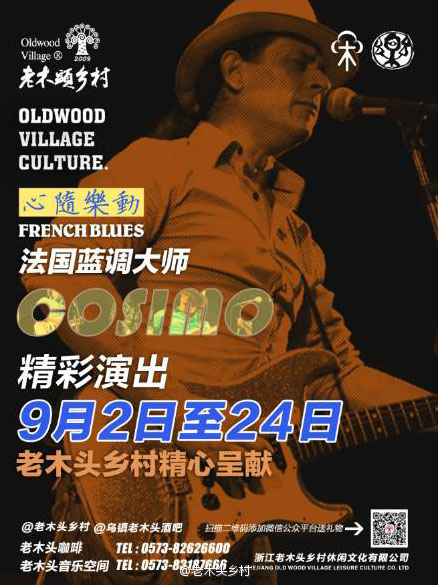
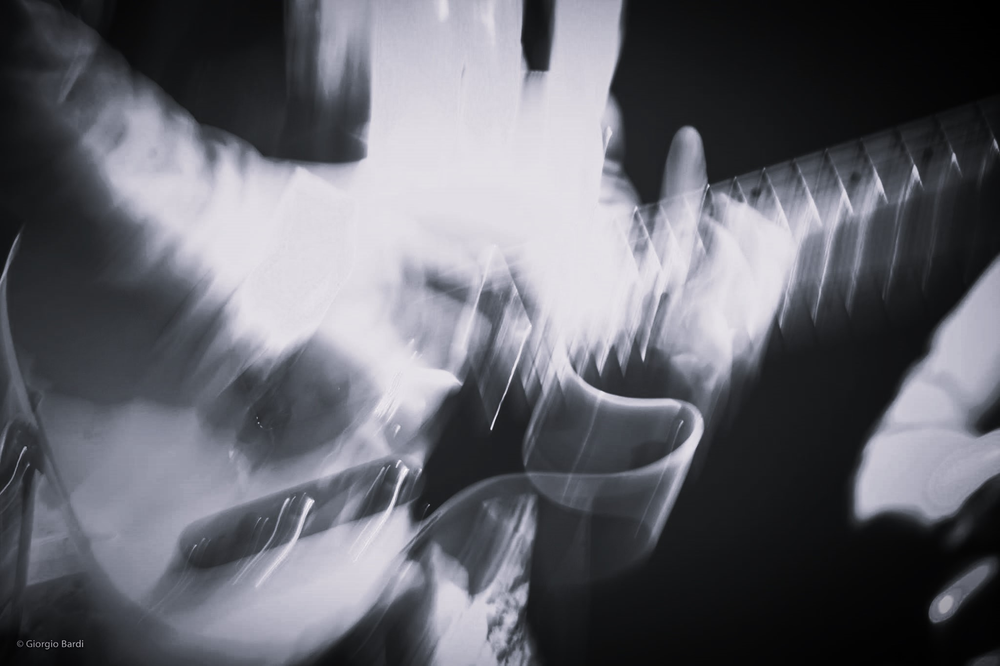

PASCAL COSIMO
Accueil
À propos
Projets
Cosimo Blues Band
Cosimo Blues Duo
Cosimo Solo Show
The Mojo Hands
The Blues Kickers
Photos
Vidéos
Concerts
Contact

Bienvenue sur le site officiel
PASCAL COSIMO vous invite à découvrir la Planète Blues d'ADRIAN PLUTON.
Les projets



A la une
    
